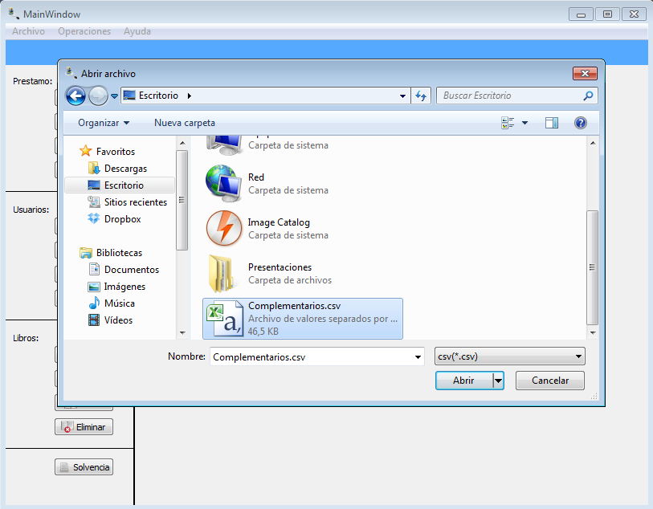

Para realizar la operación de cargar usuario por lote existe una forma de realizar dicha operación:
Figura: Menu Archivo
Una vez seleccionada la opción de cargar usuario, se debe seleccionar el archivo con extensión .csv, vea ¿Cómo crear archivo extensión csv?. La siguiente figura muestra la selección de un archivo con extensión .csv.

Una vez seleccionado el archivo que se desea cargar por lote de usuarios, aparecera una ventana como se muestra en la siguiente figura que muestra el proceso de cargar del archivo. Una vez finalizado la carga del archivo, los usuarios estarán cargados satifactoriamente al sistema.